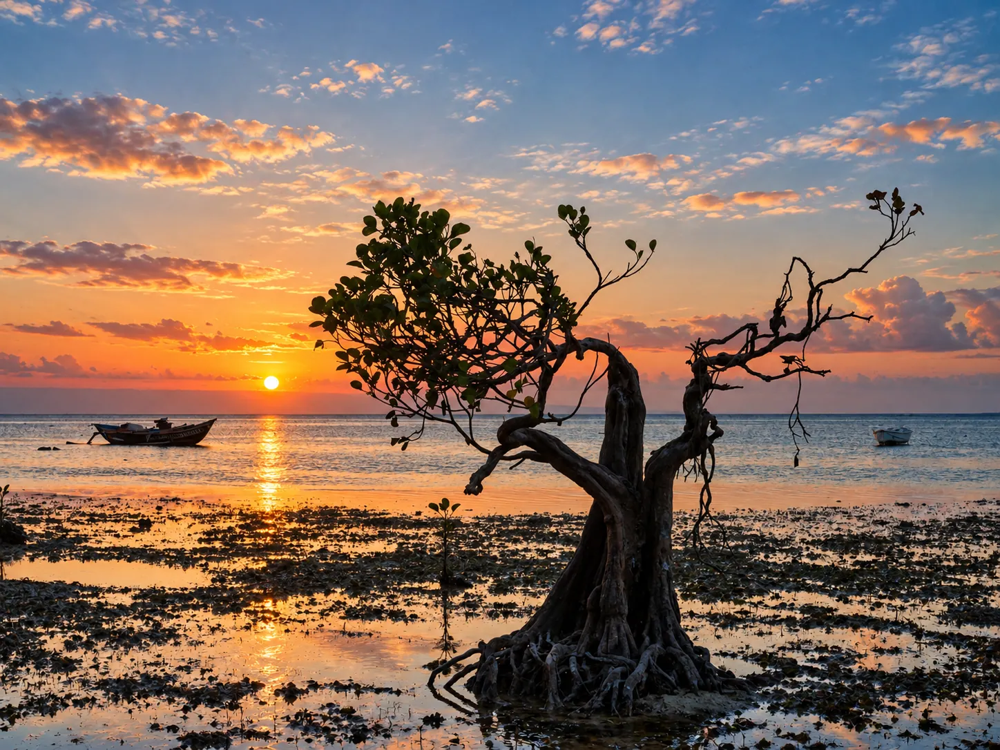

Complete change of scenery upon arriving in Eastern Sumba: the dense jungles of the West give way to savannah hills as far as the eye can see, golden in the dry season, where you sometimes come across semi-wild horses crossing the track. Around Waingapu, the area concentrates some of the most photographed landscapes of the island — and some of its most beautiful waterfalls, less known than those in the Center.
Waingapu, with its own airport, is the natural entry point for those wishing to explore this half of the island without returning to the West. The city has more to offer than just a passing point — night market, weaving village a stone's throw from the center.
Hills of Wairinding
Just 30 minutes from Waingapu, Wairinding is the Sumbanese savannah at its most spectacular: rolling hills as far as the eye can see, with no trees to break the skyline. These hills were even used as the setting for a successful Indonesian film, which largely contributed to their national notoriety – once you get there, you quickly understand why. At sunset, the grazing light sculpts the relief in a way that explains why this site comes up in almost all travel journals on Sumba.
If you're looking for the same magic with fewer people, its cousin Tanarara Hill, a little further away, offers a comparable setting in almost total calm. Some travelers even prefer Bukit Ndapayami, 20 minutes away — a narrow, windswept ridge with 360° views and even fewer people. And if time is short, Bukit Tenau, barely 6 km from the center of Waingapu, offers the same type of landscape without the journey.

Beach of Walakiri
Walakiri owes its reputation to its twisted mangroves silhouetted against the sky at sunset – nicknamed the “dancing trees”. It is one of the most photographed spots on the island, and one of the rare ones where you regularly come across buffalo bathing in the sea at the end of the day. Barely 20 minutes from Waingapu, it is also one of the easiest to access sites in the area.

Associated service
Rent a scooter in Waingapu
Ideal for doing Wairinding and Walakiri on the same day.
Waterfall of Tanggedu
Nicknamed the "Grand Canyon of Sumba", Tanggedu is distinguished by its shape: the water rushes down a large plateau of clear rock in several levels, between walls which recall - in miniature - the famous Arizona canyon. The road passes through the traditional village of Prainatang and sometimes passes royal tombs. The track is rough at the end — a driver or suitable vehicle is recommended, especially in the wet season.
Savannah of Puru Kambera
A little further north, Puru Kambera offers the same type of landscape as Wairinding, but even wilder — waves of golden hills where horses sometimes graze, far from any main road. A rare feature for Indonesia: its beach is lined with pine trees, a tree that we usually associate with altitude rather than the seaside.

Want to see everything in one day?
Eastside Day Trip
Wairinding, Tanggedu and Walakiri in one excursion, with driver.
Waterfall of Waimarang
Discovered more recently than its neighbors - reported to the public in 2015 -, Waimarang remains much less frequented: its intense blue-green basin, set in a rock canyon, makes it one of the most photogenic in the area. Local legend has it that it was a bathing place for angels — a story that residents of the neighboring village still happily tell.
Waterfall of Koalat
Even more confidential, Koalat is worth a short hike from the village of Maidang, with a shallow river crossing along the way — good water sandals are essential.
What else to do in the East
For a more cultural immersion, head to Kambaniru or the villages around Waingapu, renowned for their ikat weaving. And if you prefer to entrust the organization to someone who knows every route and every shortcut, our private driver service covers the entire Eastern zone for the day. The village of Prailiang, built on a hill to escape the slave traders of yesteryear, and the hill of Hiliwuku, one of the best Stargazing points on the island, complement this area well. For those curious about ancient history, the archaeological site of Lambanapu preserves remains dating back 2000 years, from the first waves of settlement on the island. Finally, Palindi Piarakuku Hills offers a more confidential alternative to Wairinding, for the same limestone hill landscapes without the crowds.